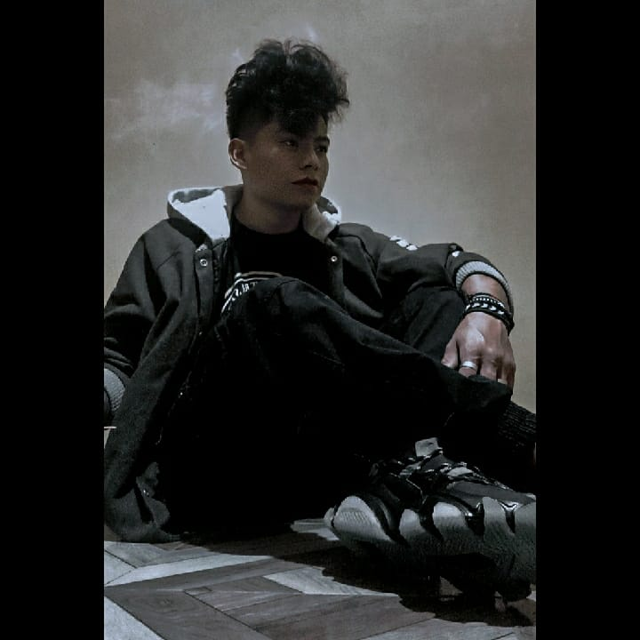

Sobre mí
Mi nombre es Osmer Suner Barrera Quiroga , soy estudiante de tercersemestre de la carrera de Ingeniería en Sistemas informaticos en la Universidad Privada del Valle, me apasiona la tecnología, el diseño y la ciberseguridad, me gusta aprender y mejorar mis habilidades en el campo de la tecnología, me considero una persona proactiva y con gran capacidad de trabajo en equipo.
Me gusta mucho todo lo relacionado con el diseño, ya sea en 2D o 3D, tengo experiencia usando herramientas como Adobe Photoshop, Adobe Illustrator, Blender, Maya, Corel Draw entre otras. Tengo conocimientos basicos de Ciberseguridad, me parece un area muy interesante y me interesa aprender mas al respecto. Tengo un poco de experiencia en el desarrollo de aplicaciones web, utilizando tecnologias como HTML, CSS, JavaScript. Tambien trabaje usando lenguajes de programacion como Python, Java y C#.